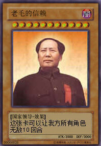
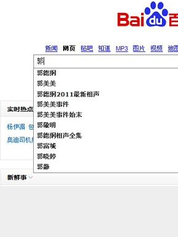
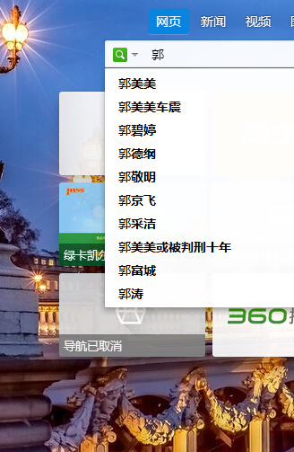
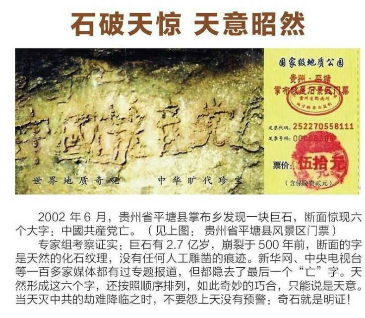
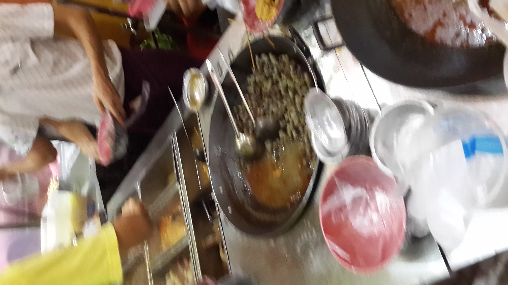

Conversation with 81184027 at Thu 14 Aug 2014 06:37:23 PM CST on 154115835 (webqq)
(06:40:25 PM) 此去经年: 
(06:46:25 PM) 此去经年:
(07:01:24 PM) 蛋包飯: 网络推手“立二拆四”受审 曾炒作郭美美事件
(07:01:34 PM) 紫罗兰: :|
(07:01:41 PM) 紫罗兰: 喝多了
(07:02:47 PM) 蛋包飯: 喝酒了？
(07:03:43 PM) 此去经年: 郭美美这样都能发大财:-S
(07:04:05 PM) 蛋包飯: 网络推手“立二拆四”网上发帖居然每年能赚一千万的毛收入
(07:04:23 PM) 蛋包飯: 赚的太凶了，被抓了，坐牢。
(07:04:29 PM) 福建-福州&水浒: :D:D:D
(07:06:10 PM) 蛋包飯: 每年能赚一千万只是保守的说法
(07:07:56 PM) 此去经年: 不懂得早点收网的下场
(07:09:20 PM) 蛋包飯: 钱赚太多没有交税的下场
(07:09:48 PM) 光: 网络推手很多啊
(07:10:09 PM) 光: 很多网民关注的事件背后都有推手
(07:10:18 PM) 光: 水军
(07:10:43 PM) 光: 水军是网络营销中的主要常用手法
(07:11:08 PM) 光: 那种到处发广告的只是水军之一
(07:16:04 PM) 蛋包飯: 嗯。网络推手就是所谓的“托”
(07:13:35 PM) 光: 嗯
(07:13:38 PM) 光: 托
(07:17:26 PM) 福建-福州&水浒:
(07:20:01 PM) 此去经年: 反抗，我不加入！
(07:20:57 PM) 此去经年: 小组织变强变大的时候啥人都吸纳的
(07:23:38 PM) 蛋包飯: 发帖居然能赚钱。我也发过贴:D
(07:24:01 PM) 此去经年: 不懂
(07:24:19 PM) 蛋包飯: 只是没去炒作。赚钱的帖是去炒作了
(07:22:59 PM) 光: 那是有目的的炒作
(07:23:28 PM) 光: 比如搞臭一个人
(07:23:36 PM) 光: 捧红一个人
(07:23:53 PM) 光: 给网店刷信用
(07:24:16 PM) 光: 转移社会热点
(07:24:57 PM) 光: 因为大多数人看到的只是表象
(07:25:03 PM) 光: 不会深想
(07:25:17 PM) 光: 这种炒作就是针对这些不会思考的人群
(07:25:57 PM) 光: 操作成功之后，拿钱走人
(07:26:07 PM) 光: 再找新的热点
(07:26:37 PM) 光: 有点网络雇佣军的味道
(07:29:45 PM) 紫罗兰: :)
(07:29:46 PM) 此去经年: 郭美美的百度百科资料被浏览过750万次。
谷歌：找到相关结果约 39,000,000 条
百度：找到相关结果约78,600,000个
百度贴吧：郭美美吧有贴子13729篇
报道过郭美美的媒体，包括网站、电视、报刊杂志：无法统计；
浏览过郭美美相关信息的人：不计其数；
百度搜索关键鉰数量，郭美美已经超过郭富城；
(07:29:56 PM) 紫罗兰: 喝了一点
(07:27:28 PM) 光: 再高级一些帮人洗底，办脏活
(07:28:08 PM) 光: 正经事情，那么赚钱这么多的
(07:31:20 PM) 此去经年: 
(07:28:35 PM) 光: 针对百度的推广
(07:28:39 PM) 光: 也在其内
(07:28:55 PM) 光: 大多数人，普通人基本上只会用百度
(07:31:57 PM) 此去经年: 现在
(07:32:25 PM) 紫罗兰: 我只用百度
(07:29:27 PM) 光: 嗯
(07:29:38 PM) 光: 所以这些水军只要控制了百度
(07:29:43 PM) 光: 就可以影响网民
(07:30:06 PM) 光: 有心人可以去观察
(07:30:11 PM) 光: 水军很容易识别的
(07:30:32 PM) 光: 一个特点，帐号多，
(07:30:38 PM) 光: 一个特点整天发广告
(07:33:59 PM) 紫罗兰: 水军是什么？
(07:31:34 PM) 光: 你可以理解成在网络发广告的
(07:31:52 PM) 光: 就好比在城市电线杆上贴老军医的人
(07:35:00 PM) 紫罗兰: 明白了，看看纪录的
(07:32:01 PM) 光: 嗯
(07:32:44 PM) 光: 中文名网络水军外文名internet mercenaries作 用为他人发帖回帖造势危 害影响他人正常浏览帖子构 成受雇佣的网络人员
(07:33:02 PM) 光: 网络水军[1] （别名：水军）顾名思义，是指在论坛大量灌水的人员。
网络水军
网络水军相册
网络水军相册(11张)
，即受雇于网络公关公司、以发帖回帖为主要手段、为雇主进行网络造势的网络人员，有专职和兼职之分。
一般来讲，发帖回帖造势常常需要成百上千个人共同完成，那些临时在网上征集来的发帖的人在行内被叫做“网络水军”。2009年12月央视报道网络水军这一新兴现象之后，受到社会广泛关注，不少长期在线的网虫们纷纷加入网络水军一族；市场上比较可靠的主要有唯特网络信息有限公司等帮助企业以及新产品的快速起步。
网络新词“网络水军”
版主把主帖发出去后，获得最广大的网民的注意，进而营造出一个话题事件让所有网络公关公司都必须雇佣大批的人员来为客户发帖回帖造势，这个工作常常需要成百上千个人共同完成。那些临时在网上征集来的发帖的人在行内被叫做“水军”。[1]
(07:33:35 PM) lost message from #197255 to #197255
(07:36:36 PM) 醒悟: 刚在手机店看了一下红米加强版1千3元5.5寸好大:D京东1千二
(07:36:54 PM) 潮哥: 坑爹
(07:38:08 PM) 醒悟: 美版苹果1千4元4s我想是假货:D
(07:43:55 PM) 醒悟: 米4京东上找不到
(07:44:42 PM) 潮哥: 翻新机
(07:42:09 PM) 光: 所以爱凑热闹的，没有主见的，社会经验少的
(07:42:20 PM) 光: 上网只会用百度的
(07:45:23 PM) 醒悟: 京东上有假货吗
(07:42:32 PM) 光: 都被人牵着鼻子走
(07:43:02 PM) 光: 营销模式和淘宝不一样吧
(07:46:04 PM) 醒悟: 那苹果是手机店的
(07:46:04 PM) 潮哥: 有假货
(07:46:36 PM) 醒悟: 小店就怕假货
(07:44:36 PM) 光: (07:42:09 PM) 光: 所以爱凑热闹的，没有主见的，社会经验少的
(07:42:20 PM) 光: 上网只会用百度的//这个人群，妇女，老人，小孩居多
(07:44:53 PM) 光: 刚学会上网的城镇农村人居多
(07:45:17 PM) 光: 被骗的也同样主要是这个群体
(07:45:50 PM) 光: 百度，还有一个外号叫“百毒”
(07:49:37 PM) 醒悟: 比没有好百毒:D
(07:46:38 PM) 光: 北京市公安局统计数据显示：50%以上的网络发帖都出于网络公关。 调查:网络公关年服务毛收入达10亿元 记者了解到，企业支付给公关公司的费用，根据不同的需求和项目而收费不同。一般情况下，公关公司抽取60%，而众多 水军则分食剩下的40%.“这里头水很深，有时候水军也会做一些死链接，伪造效果。而刁难的客户却按照营销活动带来的实际到店人数进行评估付费，搞不好， 公关公司也会竹篮打水一场空。”互动营销经理杨丹说。
(07:46:56 PM) 光: 嗯
(07:46:59 PM) 光: 国内没办法的
(07:47:09 PM) 光: 大多数人只能用百度
(07:47:50 PM) 光: 由于百度的质量低
(07:51:03 PM) 醒悟: 百姓看新闻不过就是看热闹
(07:48:06 PM) 光: 时间长了也影响到google的中文搜索质量
(07:48:20 PM) 光: 因为百度的存在误导了很多流量
(07:48:32 PM) 光: 不少诈骗网站在google的排名也不低
(07:49:08 PM) 光: 百度成了间接优化google的一个入口了
(07:49:26 PM) 光: 所以以后对搜索引擎的要求还要提升
(07:49:39 PM) 光: 不然垃圾信息就会取代有价值的信息
(07:49:58 PM) 光: 谁也不希望活在电线杆广告的世界吧
(07:53:18 PM) 醒悟: 恩
(07:50:19 PM) 光: 嗯
(07:51:14 PM) 光: 大多数人刚学会电脑
(07:51:22 PM) 光: 满心欢喜的上了网
(07:51:31 PM) 光: 后来发现网络世界的坑不比现实世界少
(07:54:34 PM) 醒悟: 是的
(07:51:33 PM) 光: 甚至更多
(07:51:41 PM) 光: 嗯
(07:52:12 PM) 光: 最后就出了两类人
(07:52:19 PM) 光: 一种是坑人经验丰富
(07:52:24 PM) 光: 一种是被坑经验丰富
(07:55:39 PM) 醒悟: 电脑走入家庭也就五六年，现在网吧死了
(07:52:45 PM) 光: 嗯
(07:52:58 PM) 光: 应该也不会死
(07:53:12 PM) 光: 水军的栖息地大本营
(07:53:33 PM) 光: 网吧的电脑多多啊
(07:53:37 PM) 光: 做水军最合适了
(07:53:48 PM) 光: 如果利用率不高的话
(07:57:12 PM) 醒悟: 也就打工的玩玩里面放几台赌博机现在网吧靠赌博机挣钱
(07:54:28 PM) 光: 对老板没啥钱赚了
(07:54:33 PM) 光: 对于网管
(07:54:37 PM) 光: 就有钱捞了
(07:54:49 PM) 光: 一堆机器都归他管
(07:55:01 PM) 光: 可以挂多少个qq啊
(07:58:51 PM) 醒悟: 嗯!现在网吧我去看过基本没人玩空空的
(07:55:57 PM) 光: 上海应该不多了
(07:56:14 PM) 光: 一些二三线城市的还是挺多的
(07:56:21 PM) 光: 三四线
(07:59:42 PM) 醒悟: 可能好点
(07:56:44 PM) 光: 如果有也是往奢华程度发展了
(07:56:57 PM) 光: 比如有女性专门陪玩
(08:00:21 PM) 醒悟: 哈哈那玩大了
(08:00:44 PM) 蛋包飯: internet mercenaries网络雇佣兵
所以“百度”会对网名进行误导:D
(08:01:07 PM) 蛋包飯: 外媒确实有用百毒来评价百度
(07:59:21 PM) 光: http://tieba.baidu.com/p/1081047751
(07:59:23 PM) 光: 这种
(08:02:30 PM) 蛋包飯: 中国内地网民只能用百度
(07:59:36 PM) 光: 确实没的选择
(08:02:43 PM) 醒悟: 包饭我今天看了一下红米加强版真八核5.5寸好大你买吗1千二
(08:02:57 PM) 潮哥: 贵死了
(08:03:01 PM) 潮哥: 买个鬼
(08:03:23 PM) 醒悟: 红米一般的8百
(08:03:24 PM) 蛋包飯: 红米可以入手。但是不要加强版
(08:03:36 PM) 蛋包飯: 一般的红米就可以了。加强版没什么好的
(08:03:54 PM) 醒悟: 加强版大一般的5寸
(08:04:38 PM) 醒悟: 内存一个一G一个是2G
(08:05:19 PM) 醒悟: 摄像头也不一样一个1300万一个800万
(08:05:29 PM) 蛋包飯: 针对不同用户吧，你把手机当电脑用，要买加强版的红米
(08:05:35 PM) 蛋包飯: 我是把电脑当手机用。
(08:05:45 PM) 醒悟: :D
(08:02:54 PM) 光: 不到两万元就可以炒火一个企业
记者以初创企业主的身份，联系了一家号称专业网络营销推广的水军公司，上演了一幕水军版“无间道”，挖掘水军公司的操作流程和收费报价。
“你只要提供给我们事先准备好的宣传稿和资料，以及预算金额，我们就可以帮你进行专业的项目宣传推广，后期还会有关键词优化，企业曝光率很快就上去了。”水军公司客户服务人员熟练地介绍自己公司的服务，还承诺有专门的人员策划详细的推广项目。
得知记者想为自己的新公司制造点噱头后，客服小刘在次日列出一份详细的企业推广策划书，总预算为14040元。“宣传10天为一个周期，这样效果比较好，也方便规划。”小刘分析，水军公司将针对企业的性质，在10天的策划期里，从论坛贴吧、企业信誉问答、微博和QQ群四个大项目定时定量入手，每天1500元左右的推广费绝对是“物有所值”的。
策划的重点“轰炸对象”是论坛。“论坛人气高，活跃度强，更容易引起用户共鸣和快速增加曝光度。”小刘说，该公司有十几万水军可以调遣，保证“水”到渠成。
论坛“轰炸”重点突出，分工严谨。首先，将企业提供的宣传软文在天涯、猫扑、凤凰、搜狐等一线论坛分散发帖，各个城市的热门论坛也是必“轰”之地。预计3天为一期，每期发帖200个，紧跟着是1400条跟帖回复，有发有跟，相互呼应，推广费用在1300元左右，为推广“预热”。
“发帖后，我们还会进行详细的数据分析，选出重点维护对象。”小刘说，总部会根据发帖反馈表，分派一部分水军对2个链接进行重点维护。整场论坛轰炸战的关键戏码就在此处。每天持续对地2个帖子进行900次回复，把帖子“顶起来”。光有回复还不够，还要每天“自然地”不定量点击，制造出20万次的点击率，持续作战7天才算一场完整的论坛轰炸战。每发一条帖子叫价0.9元，而回帖相对便宜，每条0.7元。整套论坛推广费用算下来是6200元，在四个大项目中花费最高。
北京市网络新闻监管中心指出，目前国内知名商业网站和论坛50%以上的帖子为水军所为。开心网曾疯狂转载过一篇《春晚最火“吊带装”》的帖子，仅发帖一天，点击量就达到37万人次，天涯、网易、新浪、凤凰、大旗、MSN社区、腾讯等15个主流网站，200余个B类网站强力首页、加精、置顶等推荐，包括电视、平面和网络共243家媒体争相报道，尽管褒贬不一，但“吊带男”宋山木一下子火了！事后确认是众品互动的幕后水军在推波助澜，论坛“轰炸”的重要性，可窥一斑。
与论坛上“狂轰乱炸”并行的，是企业信誉问答和QQ群推广。“我们会把与企业相关的优势信息和好评，以一问二答一采纳的形式发布到问答平台。”小刘补充说，这种第三人称的推广方式实则是一种口碑营销，受众更容易相信，计划以搜搜和天涯两个平台为主，每天35组问答，每组6元，一共做10天。
QQ群推广则是病毒式营销。搜索和企业性质相关的关键词，例如“电子产品”等，锁定1000个QQ群，不管这群是真是假、活跃不活跃，把编辑好的宣传文（内容可以是一张图片+一个链接+一段文字）一股脑儿地在这些QQ群发布。一般每1000个群收费1300元。“我们采用录像的方式记录整个QQ群的推广过程，完成后发给你们验收。”小刘对售后服务做出保证。
至于基层的网络水军如何获得报酬？记者调查后发现，现在有众多“网络推广网站”，任何人都可以注册为网络推手，在推广网站上为雇主完成评论、转发、发帖等网络推广任务后，每个任务就有几毛钱到几元钱的报酬。有的大学生通过兼职做网络水军，每天在线几个小时，一个月大约可以赚1500元。
(08:03:15 PM) lost message from #197338 to #197341
(08:06:16 PM) 醒悟: 当平板玩可以够大
(08:06:37 PM) 醒悟: 米3听说发热不如米2
(08:07:02 PM) 醒悟: 米4还没上市
(08:04:13 PM) 光: http://news.xinhuanet.com/info/2013-04/15/c_132308180.htm
(08:08:45 PM) 紫罗兰:
喝多了，一下子拿了1000给熟人
(08:08:56 PM) 紫罗兰: 这下后悔了
(08:06:41 PM) 光: 网络水军营销是自欺欺人 动用水军虽然可以迅速取得几十万个转发、几十万个评论、几十万个“顶”等营销数字，但水军对营销能起到多大的实质性帮助？恐怕是自欺欺人。 据记者观察，@走遍中国旅游网，就该请“大禹”治治水。这样一个微博数目不到1000条、关注人数不超过110的微博，竟然有1000多万粉 丝，每一条微博无论内容是什么，转发量均过百。点击其评论列表细看，评论均为胡言乱语，粉丝的ID名也非常可疑。这样的“活跃度”，除了虚张声势，能取得 怎样的营销效果？ 同为电影营销，很多电影不像《王的盛宴》雇用水军，甚至没有水军参与营销，同样取得了很好的营销效果。比如与《王的盛宴》同时上映的《少年派的 奇幻漂流》，李安团队依靠口碑营销，短短时间就拿走了1.7亿票房，豆瓣网络评分都在9分以上。同样，《让子弹飞》、《满城尽带黄金甲》曾声称遭到水军恶 评，却没有一直黑下去，观众反而是边骂边看，越骂越看。票房不好，不是一句被水军黑或者水军用得不好就可以搪塞的。滥用水军，到头来破坏的是自己的公信 力，影响网络正常的营销秩序，反而让观众远离自己。 中国国际公关关系协会的数据显示，2008年网络公关市场占中国公关市场比重为6.3％，总营业额约为8.8亿元；2011年，由于公关支出总量增加，网络公关的总营业额升至约9.6亿元，但网络公关的比重却下降到3.7％。有网络水军感叹“网民的智商越来越高，对我们的要求也越来越高”，“生意越来越不好做了，水军竞争得很厉害”。 与此同时，除了新浪微博等社交媒体不断推出治水措施，国家亦有意整治网络水军乱象。可以预见，自欺欺人的水军营销将越来越行不通。（成功营销）
(08:06:47 PM) lost message from #197349 to #197349
(08:09:48 PM) 醒悟: :D
(08:07:53 PM) 光: 网络水军
(08:10:58 PM) 紫罗兰: 才知道水军还可以指代这个群体
(08:07:57 PM) 光: 时代性的产物
(08:11:30 PM) 蛋包飯: 病毒式营销---QQ群推广:D
(08:08:30 PM) 光: 这个社会很复杂
(08:08:37 PM) 光: 除了传销邪教还有水军
(08:08:51 PM) 光: 都不是什么好鸟
(08:12:06 PM) 醒悟: 只要能挣钱什么人都有
(08:12:16 PM) 福建-福州&水浒: :smirk:
(08:12:33 PM) 醒悟: 坏笑
(08:12:35 PM) 蛋包飯: 假新闻，百度推广，病毒式营销，中文网站的信誉度在降低。
(08:10:09 PM) 光: 本质都一样
(08:10:10 PM) 光: 欺骗
(08:13:29 PM) 醒悟: 上网都不不敢买贵的东西
(08:10:40 PM) 光: 中国人多啊
(08:10:46 PM) 光: 你买便宜的上当
(08:10:50 PM) 光: 架不住人多啊
(08:13:55 PM) 蛋包飯: 嗯，本质就是造假，欺骗。所以淘宝不久将砸了自己的饭碗。
(08:10:56 PM) 光: 嗯
(08:14:21 PM) 福建-福州&水浒: :dig:
(08:11:43 PM) 光: 假 恶 丑 必然是一体的
(08:14:46 PM) 蛋包飯: 所以高端产品，奢侈品，淘宝不敢做，阿里巴巴都不敢。
(08:12:04 PM) 光: 当你容忍了假
(08:12:10 PM) 光: 恶 和 丑 就都进来了
(08:12:31 PM) 光: 苍蝇不叮无缝蛋
(08:15:57 PM) 醒悟: 只能买买日用品，贵的电器我是不敢网上买，不如东方购物可靠
(08:16:09 PM) 蛋包飯: 嗯。上当的人多，就是假货也会被认为有利润可图。只要有利润，杀人的买卖都敢做。
(08:13:14 PM) 光: 嗯
(08:13:31 PM) 光: 表面看假的危害不大
(08:13:44 PM) 光: 实质上所谓问题都是从这里开始的
(08:13:48 PM) 光: 所有
(08:17:22 PM) 醒悟: 造假国人习惯了
(08:17:28 PM) 蛋包飯: 所以电子商务进入中国市场，只能是低端产品和假货仿制品赝品，做不到高端产品。
(08:17:31 PM) 紫罗兰: 不用百度用什么
(08:14:29 PM) 光: 所以中国问题多啊
(08:14:36 PM) 光: tmd123.com
(08:14:39 PM) 光: 你用这个吧
(08:17:59 PM) 紫罗兰: Hao123
(08:15:00 PM) 光: 一个网友搞的google搜索
(08:18:09 PM) 蛋包飯: 通天塔，很不错，基于谷歌的搜索
(08:15:09 PM) 光: hao123也是百度啊
(08:18:23 PM) 紫罗兰: --b
(08:15:55 PM) 光: 假 恶 丑 就好比邪恶三兄弟
(08:16:11 PM) 光: 最有欺骗性的是假
(08:19:14 PM) 紫罗兰: 这个是什么
(08:16:24 PM) 光: tmd123.com
(08:16:30 PM) 光: 这个网友做的搜索引擎
(08:19:32 PM) 蛋包飯: 国人造假已经危害到自己了。一旦想要正品和高端产品就要海外代购了。
(08:16:34 PM) 光: 基于google的
(08:19:44 PM) 醒悟: 中国人是牛男人都能扮女人卖:D
(08:19:53 PM) 福建-福州&水浒: :smirk:
(08:20:10 PM) 紫罗兰: 搜狗
(08:17:09 PM) lost message from #197403 to #197403
(08:20:11 PM) 蛋包飯: 正品和高端产品淘宝，天猫是买不到了。国人一旦想要正品和高端产品就要海外代购了。
(08:17:26 PM) 光: 一旦人开始可以容忍假了
(08:20:11 PM) 紫罗兰: (#197403)
(08:17:32 PM) 光: 那么恶事 和丑事
(08:17:35 PM) 光: 就无所谓了
(08:20:49 PM) 醒悟: 中国造高端的国人也不信!迷外
(08:18:04 PM) 光: sogou用户量不大
(08:21:18 PM) 紫罗兰: 哦
(08:21:20 PM) 蛋包飯: 也是，中国人确实媚外
(08:21:36 PM) 紫罗兰: 通天塔
(08:19:13 PM) 光: 假 可以拉低人的道德标准
(08:22:20 PM) 醒悟: 中国人还好面子好东西便宜了还不要一定要贵
(08:22:36 PM) 福建-福州&水浒: :smirk:
(08:23:03 PM) 蛋包飯: 想买贵的也是国人的消费心理
(08:20:06 PM) 光: 如果和假竞争也采用假
(08:20:14 PM) 光: 那么就没有道德了
(08:23:17 PM) 蛋包飯: 贵的商品显得高端大气上档次
(08:23:42 PM) 醒悟: 为个苹果卖器官
(08:20:48 PM) 光: 同样也不存在正义的一方
(08:24:15 PM) 福建-福州&水浒: 
(08:21:36 PM) 光: 就好比战争不管是胜利方还是失败方都是有罪的，因为都在杀人
(08:24:46 PM) 蛋包飯: 嗯，我就觉得苹果不值得买。那么多品牌非要选择超过月收入的iphone.显然是媚外心理。
(08:25:14 PM) 福建-福州&水浒: 就是就是
(08:25:31 PM) 福建-福州&水浒: 我也喜欢IPHONE
(08:25:36 PM) 福建-福州&水浒: 有什么好的
(08:25:42 PM) 福建-福州&水浒: 不喜欢
(08:26:36 PM) 醒悟: 我喜欢便宜的东西坏了丢了无所谓
(08:27:16 PM) 福建-福州&水浒: :handclap:
(08:31:07 PM) 紫罗兰: 我喜欢好的
(08:31:17 PM) 紫罗兰: 不一定要贵
(08:31:23 PM) 醒悟: 上次我表弟结婚来了很多以前的同事，都是在我叔公公司打工，过来都买了汽车，手机基本全苹果。问我买了什么事车:D我电瓶车
(08:31:24 PM) 蛋包飯: 工业品和电子品消费越贵，说明这个国家的工业化水平很低。尚未进入后工业化时代。
(08:31:42 PM) 紫罗兰: 像地摊的衣服很多穿着就不舒服
(08:32:10 PM) 紫罗兰: :)
(08:29:18 PM) 光: 因为做的时候没用心
(08:29:40 PM) 光: 掺了假
(08:33:05 PM) 紫罗兰: 嗯
(08:33:08 PM) 蛋包飯: 一个后工业化时代的国家的国民不会炫耀自己身上的工业品和电子产品。
(08:30:07 PM) 光: 嗯
(08:33:33 PM) 紫罗兰: 上学穿的校服我都过敏
(08:30:38 PM) 光: 嗯
(08:33:53 PM) 紫罗兰: 所以夏天贴身的我不穿
(08:34:02 PM) 醒悟: 衣服买中档地摊就算了买打折的
(08:31:16 PM) 光: 以前有一个朋友做服装检验的
(08:34:19 PM) 紫罗兰: :)
(08:31:28 PM) 光: 和他一起出去看衣服
(08:34:38 PM) 紫罗兰: 肯定很多不合格
(08:31:38 PM) 光: 走到一个类似襄阳路的服饰市场
(08:34:42 PM) 醒悟: 换季打折可以
(08:31:43 PM) 光: 他一看都是假的
(08:31:56 PM) 光: 就两家卖真货的
(08:35:24 PM) 福建-福州&水浒: :wipe:
(08:32:27 PM) 光: 几百家的服饰店
(08:35:39 PM) 蛋包飯: 假鞋来自福建莆田，假衣服来自福建石狮:D
(08:35:57 PM) 福建-福州&水浒: :wipe:
(08:36:05 PM) 蛋包飯: 假烟来自福建云霄。:D
(08:36:09 PM) 紫罗兰:
:)
(08:36:16 PM) 福建-福州&水浒: :g
(08:36:17 PM) 醒悟: 鞋差的穿了脚臭
(08:33:34 PM) 光: 如果我们普通人买了
(08:36:44 PM) 醒悟: 二三百的就可以啦
(08:33:42 PM) 光: 只看外表觉得都一样的哦
(08:33:59 PM) 光: 看起来都挺好的
(08:37:03 PM) 紫罗兰: 乡下穿的都是假到不得假的
(08:34:05 PM) 光: 嗯
(08:37:16 PM) 蛋包飯: 莆田造假鞋是出名的，阿迪达斯，耐克很便宜了就是假。
(08:37:57 PM) 辽宁-沈阳&樱桃: 想聊天，困|-)
(08:37:59 PM) 蛋包飯: 专卖店一双耐克卖到六百多，一千多一双的鞋都有，一般工薪阶层不会下手的。
(08:34:58 PM) 光: 那个地方在上海科技馆下面
(08:38:00 PM) 醒悟: 运动服我从不穿
(08:38:04 PM) 紫罗兰: 我买过一袜裤10元，泡了一周还是很臭，最后扔了
(08:35:06 PM) 光: 很大的服饰市场
(08:35:16 PM) 光: 不少老外过去买东西
(08:35:47 PM) 光: 我这个朋友是专门做外贸服饰质量检验的
(08:36:04 PM) 光: 各种名牌都过过
(08:39:06 PM) 醒悟: (#197477)我去过申崇二线车站就在那儿
(08:36:10 PM) lost message from #197478 to #197478
(08:39:12 PM) 紫罗兰: 外贸比较严格是么
(08:36:15 PM) 光: 很严格
(08:39:18 PM) 辽宁-沈阳&樱桃: 有没有说怎么分辨真假？
(08:36:23 PM) 光: 有标准的
(08:40:01 PM) 蛋包飯: 中国的工厂把一等品都卖老外了。次品留给自己人。
(08:37:16 PM) 光: 利丰 这个公司的
(08:37:22 PM) 光: 做外贸的人一定知道的
(08:40:38 PM) 醒悟: 南京路上也都假货骗外地人的，淮海路的正宗
(08:37:52 PM) 光: 香港利丰集团起源于广州的华资贸易 (1906 - 1949) ，利丰是香港历史最悠久的出口贸易商号之一。于1906年，冯柏燎先生和李道明先生在广州创立了利丰贸易公司；是当时中国第一家华资的对外贸易出口商。初时只从事瓷器及丝绸生意；一年之后，增添了其它的货品，包括竹器、藤器、玉石、象牙及其它手工艺品，包括烟花爆竹类别。截止到2012年，集团旗下有利亚﹝零售﹞有限公司、利和集团、利邦时装有限公司、利越时装有限公司、利丰贸易有限公司。
(08:41:22 PM) 辽宁-沈阳&樱桃: 如果知道是假的愿意低价买就算了，可恨的是花了蛮多钱再买个假货。。
(08:38:24 PM) 光: 確實是這樣的
(08:41:47 PM) 蛋包飯: 本身就是有人愿意买假货，所以假货也有利润。
(08:38:51 PM) 光: 嗯
(08:38:58 PM) 光: 我一個朋友做服裝生意
(08:39:00 PM) 光: 剛入行
(08:39:06 PM) 光: 別人給他貨
(08:39:20 PM) 光: 10絛牛仔褲子有三條真的
(08:39:24 PM) 光: 其他都是高仿
(08:39:33 PM) 光: 被他發現了
(08:42:37 PM) 辽宁-沈阳&樱桃: 我是宁可少买但一定要买好的
(08:39:39 PM) 光: 然後退回
(08:39:44 PM) 光: 因為是朋友麼
(08:40:07 PM) 光: 可見生意場是怎樣的了
(08:40:18 PM) 光: lewis的褲子
(08:40:49 PM) 光: 你如果不懂
(08:44:01 PM) 蛋包飯: 高仿就是假货:D只不过是假货的委婉语
(08:41:00 PM) 光: 以後估計都是給你高仿當真貨給你
(08:41:04 PM) 光: 嗯
(08:44:39 PM) 醒悟: 仿到看不出:D
(08:45:19 PM) 蛋包飯: 高仿的手表才是多呢！什么劳力士，欧米伽，天梭，内地市场都是高仿的
(08:45:20 PM) 潮哥: 还有驴牌
(08:45:59 PM) 醒悟: 多的是可以玩玩不要了一丢
(08:46:12 PM) 辽宁-沈阳&樱桃: 大商场里面应该不会吧
(08:46:16 PM) 蛋包飯: 瑞士表名声是好，到了中国内地，瑞士表都成了高仿品。只有日本西铁城，精工还比较靠谱。
(08:47:03 PM) 醒悟: 都私人包柜台
(08:47:06 PM) 蛋包飯: 大商场也不一定买到真品正品。所以国人想买瑞士表，总是托人海外代购
(08:47:38 PM) 潮哥: 法治社会很少假的
(08:47:52 PM) 醒悟: 中百一店都可还价
(08:48:23 PM) 蛋包飯: 我国是人治。法治社会，你喝咖啡被咖啡烫了嘴都可以寻求赔偿。
(08:48:46 PM) 醒悟: 太平洋百货好点
(08:50:25 PM) 紫罗兰: @不再漂 你要教我做什么菜
(08:50:40 PM) 醒悟: :D
(08:50:42 PM) 紫罗兰: @不再漂 还有，你帅么？
(08:50:50 PM) 紫罗兰: :$
(08:51:00 PM) 蛋包飯: :D要求挺高的:D
(08:51:10 PM) 醒悟: 他帅死.
(08:51:15 PM) 醒悟: 了
(08:51:25 PM) 辽宁-沈阳&樱桃: 什么情况？围观中。。
(08:51:57 PM) 紫罗兰: 帅的话才想跟他学做菜，丑的话就不学了
(08:54:03 PM) 蛋包飯: 为何被屏蔽的网站打不开会自动转跳为
(08:54:56 PM) 辽宁-沈阳&樱桃: 为何最近感觉丧失了部分语言功能
(08:55:19 PM) 蛋包飯: 内地总是屏蔽外国的网站
(08:59:55 PM) 潮哥: 共费太不要脸了
(09:00:15 PM) 潮哥: 家常菜啊
(09:00:56 PM) 潮哥: 帅跟做菜有关系吗
(08:58:00 PM) 光: 你用的114的dns吧
(09:03:55 PM) 辽宁-沈阳&樱桃: 秀色可餐么:p
(09:04:24 PM) 潮哥: 要不要发个照片给你
(09:04:36 PM) 潮哥: :p
(09:10:19 PM) pastorqi: 8月14日,2014年第226天
天天主恩惠,福满溢灵程!
愿我们收获活水吗哪，向神发出感谢赞美
旧约 尼 7：61-9：21
诗 33：12-22
箴 21：11-12
新约 林前 9：1-18
(09:10:52 PM) 福建-福州&水浒: :pray::pray:
(09:11:04 PM) 此去经年: 8月14日,2014年第226天
天天主恩惠,福满溢灵程!
愿我们收获活水吗哪，向神发出感谢赞美
旧约 尼 7：61-9：21
诗 33：12-22
箴 21：11-12
新约 林前 9：1-19
(09:11:30 PM) 福建-福州&水浒: :|
(09:11:59 PM) 福建-福州&水浒: 本群信仰某个宗教的群友有木有
(09:11:29 PM) 光: 应该有
(09:11:35 PM) 光: 在暗处
(09:14:54 PM) 蛋包飯: 基督新教:)
(09:15:08 PM) 紫罗兰: 发来看看
(09:12:14 PM) 光: 我一直想找个机会把群成员梳理一遍
(09:12:22 PM) 光: 排察一下
(09:15:28 PM) 紫罗兰: @不再漂 爆照
(09:15:37 PM) 醒悟: 8-)全能的有没有:D
(09:12:42 PM) 光: 应该有
(09:12:49 PM) 光: 挡不住小号的
(09:13:02 PM) 光: 还有有的人说他是受害者
(09:13:11 PM) 光: 你也不知道是真是假
(09:16:24 PM) 紫罗兰: @光 光先生是要刷掉我这这个文盲么？
(09:13:27 PM) 光: 不会
(09:16:51 PM) 紫罗兰: :)
(09:17:10 PM) 紫罗兰: 那我就放心了
(09:17:11 PM) 醒悟: 我也文盲不爱读书:D
(09:17:16 PM) 潮哥: 你是文盲才怪
(09:14:15 PM) 光: ：）
(09:17:25 PM) 紫罗兰: 我除了好色别的没什么毛病
(09:17:28 PM) 紫罗兰: :$
(09:17:47 PM) 蛋包飯: :|女人也好色:|
(09:17:49 PM) 紫罗兰: @不再漂 真的是文盲
(09:17:58 PM) 紫罗兰: @立波 嗯，我就是
(09:15:05 PM) 光: 反正我不在乎人数多少
(09:15:14 PM) 光: 有时间我真做做这个不讨好的事情
(09:18:17 PM) 醒悟: 同病相连:D
(09:15:23 PM) 光: 现在没精力
(09:18:40 PM) 潮哥:
(09:18:49 PM) 潮哥: 这个就是我
(09:19:30 PM) 紫罗兰: @不再漂 最讨厌吐舌头的家伙
(09:19:53 PM) 紫罗兰: 不要你教做菜了
(09:22:18 PM) 潮哥: :p
(09:22:21 PM) 潮哥: 不吐了
(09:23:19 PM) 福建-福州&水浒: 写一篇文章如何
(09:23:34 PM) 福建-福州&水浒: 关于剖析～～全能神的
(09:24:15 PM) 福建-福州&水浒: 挺想做成这个事的
(09:24:43 PM) 醒悟: 写吧
(09:24:57 PM) 紫罗兰: 写吧
(09:25:06 PM) 紫罗兰: 我支持
(09:25:08 PM) 福建-福州&水浒: ～～～
(09:25:43 PM) 福建-福州&水浒: 要是有同宗教信仰，同研究人员的群友一起做就更好了
(09:23:05 PM) 光: 问答不大
(09:23:14 PM) 光: 接下来社区就是做这个的
(09:23:22 PM) 光: 一方面可以做问答
(09:26:28 PM) 福建-福州&水浒: 赚取点稿费为我们网站坐贡献:D
(09:23:28 PM) 光: 一方面可以做文章整理
(09:26:44 PM) 福建-福州&水浒: 嗯
(09:23:45 PM) 光: 稿费这都是小钱了
(09:23:55 PM) 光: 做大事不要计较这个
(09:27:02 PM) 福建-福州&水浒: 有100算一百
(09:27:23 PM) 福建-福州&水浒: 看发布那个网站喽:$
(09:27:59 PM) 醒悟: 搜狐视频升了级这下电视机卡死了:L
(09:32:33 PM) 潮哥: 网络盒子用不了了
(09:33:52 PM) 醒悟: 网络电视机不用盒子
(09:49:47 PM) 潮哥: 看不了电视，被广电总局禁止了
(09:54:03 PM) 此去经年: 昨天这也是
(09:54:08 PM) 此去经年: 今天好了
(09:55:38 PM) 紫罗兰: 准备下班
(09:55:45 PM) 紫罗兰: 好饿呀
(10:00:48 PM) 潮哥: 做饭吃呀
(10:01:04 PM) 醒悟: :D
(10:12:49 PM) 紫罗兰: --b
(10:12:53 PM) 紫罗兰: 不会
(10:22:14 PM) 潮哥: 下面条
(10:44:55 PM) 紫罗兰: 在吃
(10:47:11 PM) 紫罗兰: 
(10:48:31 PM) 潮哥: 不卫生
(10:59:44 PM) 福建-福州&水浒: 吃什么
(11:05:06 PM) 紫罗兰: 吃饱
(11:23:34 PM) 紫罗兰: 淋雨开摩托车会来，冷死了
(11:32:53 PM) 福建-福州&水浒: 你会开摩托车:|
(11:33:11 PM) 福建-福州&水浒: 女士摩托车还是有档位的那种
(11:34:13 PM) 紫罗兰: 女式
(11:34:46 PM) 紫罗兰: :p要是开男式那是够拉风的
(11:34:58 PM) 福建-福州&水浒: 是啊
(11:35:09 PM) 福建-福州&水浒: 拉风大气，上档次
(11:39:27 PM) 紫罗兰: :|
(11:42:23 PM) 福建-福州&水浒: :D:D
(11:42:44 PM) 紫罗兰: 还不睡干嘛
(11:43:32 PM) 福建-福州&水浒: 胡扯聊天
(11:43:52 PM) 紫罗兰: 哦
(11:44:07 PM) 紫罗兰: 吃饱撑着
(11:51:34 PM) 福建-福州&水浒: :D
(12:12:32 AM) 紫罗兰: :)
(12:15:11 AM) 此去经年:
(12:16:41 AM) 紫罗兰: 都不用睡觉？
(12:17:09 AM) 此去经年: 烦
(12:17:16 AM) 此去经年: 人生
(12:17:27 AM) 紫罗兰: 烦什么
(12:17:29 AM) 此去经年: 哎
(12:17:54 AM) 此去经年: 晚安
(12:19:14 AM) 紫罗兰: 这就睡了？:O
(12:20:23 AM) 紫罗兰: 我都还没唱催眠曲呢